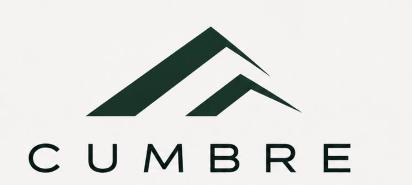

Procesos que dependen de una persona
El conocimiento clave vive en la memoria, los mensajes o una sola hoja de cálculo.

Tecnología con intención
Cumbre ayuda a empresas colombianas a convertir problemas reales de operación en mejoras que sí hacen la diferencia.
El punto de partida
No se trata de poner más tecnología encima. Se trata de ver con claridad dónde hay fricción, pérdida de información o trabajo que no debería ser manual.
El conocimiento clave vive en la memoria, los mensajes o una sola hoja de cálculo.
Los datos existen, pero llegar a una respuesta confiable toma demasiado tiempo.
El equipo invierte horas copiando, verificando, consolidando o persiguiendo información.
Hay preguntas importantes sobre ventas, inventario, clientes u operaciones sin una respuesta oportuna.
Nuestro enfoque
Antes de recomendar una herramienta, entendemos cómo funciona el negocio y qué oportunidad vale la pena resolver.
El negocio, sus clientes, su equipo y la forma en que genera valor.
Los procesos, las herramientas actuales y cómo se mueve la información.
Los cuellos de botella, errores recurrentes y oportunidades que hoy no se ven.
Una propuesta, un piloto, un diagnóstico más profundo o, si no hay valor claro, ninguna solución.
Posibilidades, no un catálogo
Estas son algunas áreas en las que una mejora puede tener sentido. No son productos predefinidos.
Datos más claros, reportes oportunos y visibilidad sobre lo que realmente importa.
Automatización práctica para reducir trabajo repetitivo, errores y tiempos de respuesta.
Integraciones y flujos de información que eliminan duplicación y desconexión.
Software o inteligencia artificial cuando aportan una ventaja clara y sostenible.
Cumbre
Somos Mario Valencia y Gustavo “Gus”. Combinamos pensamiento operativo, estrategia de negocio y construcción técnica para abordar problemas que importan.
Nuestra experiencia incluye construir herramientas para operaciones reales de retail: información centralizada, integraciones, reportes, indicadores y procesos digitales. No empezamos por una solución; empezamos por la pregunta correcta.
“La tecnología solo es valiosa cuando mejora algo que ya importa.”
Diagnóstico inicial
En menos de tres minutos, explora el área de tu operación que merece una conversación. No es una auditoría ni una promesa: es un punto de partida.
Una conversación puede ser el inicio